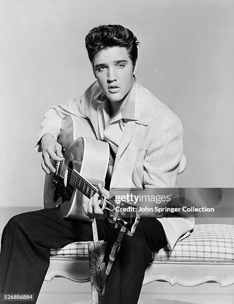
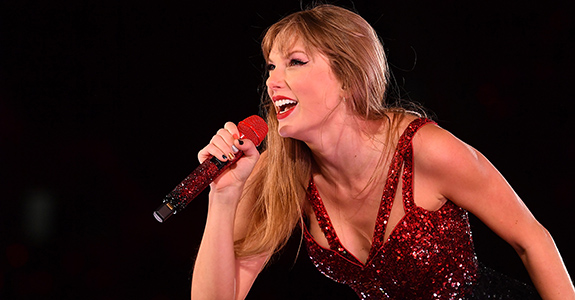
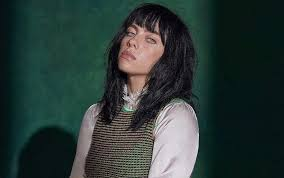

Ah, a música… O que seria de nós sem a dádiva das melodias? Quando se fala em música pensamos logo em nossos artistas favoritos, ou na música do momento, mas, você sabe o por que isso acontece? Todo artista constrói uma marca para si mesmo, assim, quando você bater o olho em algo, pronto! Estará lembrando do famoso em questão. Afinal, quem nunca olhou para pessoas atravessando uma faixa de pedestres e não se lembrou do The Beatles? Ou viu um vestido branco voando e não pensou na Marilyn Monroe? Esse artifício é usado no mundo cultural por todos, mas principalmente na cultura Pop.
O pop, que é uma abreviação de “música popular”, surgiu como um gênero que se destinava a ser facilmente acessível ao público em geral. Com canções cativantes e estruturas simples, o pop ganhou destaque nas paradas musicais e nas rádios de todo o mundo. Por ser feito para venda e para as massas, o gênero se baseia em refrões chicletes, batidas dançantes e vídeos chamativos.

Nos anos 1950 e 1960, o pop era dominado por artistas como Elvis Presley, The Beatles e Frank Sinatra, embora esses sejam precursores do rock e do jazz. Eles criaram músicas que eram altamente melódicas, com letras simples e pegajosas, que rapidamente viralizaram pelo mundo. No entanto, à medida que a música evoluiu, o pop nasceu e também precisou se adaptar para se manter relevante…..
A década de 1980 marcou o início de uma nova era para a música, onde o pop teve de fato uma importância ao mundo cultural, e, à medida que artistas começaram a incorporar elementos de diferentes gêneros em suas músicas, deixaram de produzir apenas rock, jazz ou blues, e sim o pop, o filho prodígio dos gêneros musicais. O surgimento da música pop eletrônica com artistas como Madonna e Michael Jackson trouxe elementos de música eletrônica para o mainstream. Ao mesmo tempo, o rock também teve um papel importante na evolução do pop, com artistas como Prince e George Michael incorporando elementos de rock em suas músicas.
O hip-hop, que estava emergindo como um gênero dominante nos anos 80 e 90, também teve um grande impacto na música pop. Artistas como MC Hammer e Vanilla Ice trouxeram elementos do hip-hop para o pop, criando um novo subgênero conhecido como “hip-hop pop”. Foi a colaboração entre artistas de hip-hop e pop que realmente impulsionou essa mistura de gêneros.
Os anos 90 foram marcados pelas boy bands e girl groups (grupos de 5 a 6 garotos ou garotas vocalistas dançantes que se revezavam no solo vocal). Alguns exemplos de bandas assim que estouraram na época são Spices Girls e Backstreet Boys. Ainda nesse período, podemos citar o surgimento das pop princesses, como Mandy Moore, Britney Spears, Beyoncé, Jessica Simpson e Christina Aguilera, e os fenômenos do Pop latino Ricky Martin, Jennifer Lopez, Shakira e Enrique Iglesias. Percebe-se uma tendência das cantoras “princesas do Pop” como Britney Spears e Christina Aguilera, que até então tinham uma temática mais romântica, a seguir o mesmo estilo de Madonna, com músicas de temática sensual. Surgem também novas estrelas como Avril Lavigne, Hilary Duff e Lindsay Lohan. Não podemos esquecer de ressaltar o fenômeno “college Pop” (grupo de cantores vestidos de estudantes adolescentes) que desencadeou o fenômeno mexicano RBD, em 2004, e mais recentemente o outro fenômeno da Disney, High School Musical. Uma das maneiras mais notáveis em que a música pop se reinventou foi através de colaborações entre artistas de diferentes gêneros. Essas colaborações não apenas introduziram novos estilos musicais ao pop, mas também expandiram o público-alvo dessas músicas.
Um exemplo marcante é a colaboração entre o rapper Jay-Z e a cantora pop Beyoncé. Eles lançaram o álbum “The Carters” em 2018, que mesclou o rap de Jay-Z com o R&B e o pop de Beyoncé. O álbum foi um sucesso crítico e comercial, e mostrou como a mistura de gêneros pode resultar em músicas inovadoras e emocionantes

Outro exemplo é a colaboração entre o cantor country-pop Taylor Swift e o rapper Kendrick Lamar. Eles se uniram na música “Bad Blood”, que combinou elementos do country, do pop e do hip-hop. A música foi um sucesso nas paradas e demonstrou como artistas de diferentes gêneros podem se unir para criar algo único. Hoje em dia, a música pop é uma verdadeira junção de ritmos, contando com colaborações de artistas antigos no ramo e a galera que está começando agora, como Dua Lipa, Billie Eilish e The Weeknd. O mundo pop muda conforme o mundo gira, então sempre será recente, mas de certa forma, atemporal.
Como já citado, o pop é o filho do mundo musical inteiro, mas, depois da década de 90, passou de criança para adulto, e criou novas formas musicais. Confira as vertentes da música pop e seus exemplos mais famosos!
Pop Mainstream
Dua Lipa - Love Again (Official Music Video)
Indie Pop
Lana Del Rey - High By The Beach
Música Popular Brasileira
Maria Maria
Pop Rock
Britney Spears - I Love Rock 'N' Roll (Official HD
Video)
Power Pop
Weezer - Island In The Sun (Official Music Video)
Pop Latino
Anitta, Maluma - El Que Espera [Official Music Video]
Soft Pop
Lady Gaga - Hold My Hand (From “Top Gun: Maverick”) [Official Music Video]
Pop Soul
Love On The Brain
Pop Eletrônico
Alok, Bruno Martini feat. Zeeba - Hear Me Now (Official Music Video)
